SeqPlotR can generate legends automatically when you use
map() to bind a visual aesthetic (color,
fill, shape) to a data column. No
seq_legend() call is required. For continuous numeric
columns a color-bar legend (GradientLegendSpec) is
produced; for discrete character or factor columns a keyed legend
(SeqLegendSpec) is produced using the flexoki palette.
Auto-generated legends are placed in the right track
margin by default (position = "track_margin",
side = "right"). To make the margin visible you set
right in the plot-level margins aesthetic. The
explicit legend field always overrides auto-generation when
set.
seq_gradient_legend() lets you attach a gradient legend
explicitly — useful when you want a custom palette, specific tick
positions on the color bar, or fine-tuned placement.
Data used in this vignette
library(SeqPlotR)
#>
#> Attaching package: 'SeqPlotR'
#> The following object is masked from 'package:base':
#>
#> %||%
library(GenomicRanges)
#> Loading required package: stats4
#> Loading required package: BiocGenerics
#> Loading required package: generics
#>
#> Attaching package: 'generics'
#> The following objects are masked from 'package:base':
#>
#> as.difftime, as.factor, as.ordered, intersect, is.element, setdiff,
#> setequal, union
#>
#> Attaching package: 'BiocGenerics'
#> The following objects are masked from 'package:stats':
#>
#> IQR, mad, sd, var, xtabs
#> The following objects are masked from 'package:base':
#>
#> anyDuplicated, aperm, append, as.data.frame, basename, cbind,
#> colnames, dirname, do.call, duplicated, eval, evalq, Filter, Find,
#> get, grep, grepl, is.unsorted, lapply, Map, mapply, match, mget,
#> order, paste, pmax, pmax.int, pmin, pmin.int, Position, rank,
#> rbind, Reduce, rownames, sapply, saveRDS, table, tapply, unique,
#> unsplit, which.max, which.min
#> Loading required package: S4Vectors
#>
#> Attaching package: 'S4Vectors'
#> The following object is masked from 'package:utils':
#>
#> findMatches
#> The following objects are masked from 'package:base':
#>
#> expand.grid, I, unname
#> Loading required package: IRanges
#> Loading required package: Seqinfo
win <- GRanges("chr1", IRanges(1, 1e6))
# 400 random genomic features with a continuous score and a discrete type label
n <- 400
starts <- sort(sample(1:999000, n))
gr <- GRanges(
"chr1",
IRanges(starts, width = sample(500:3000, n, replace = TRUE)),
score = round(runif(n, 0, 1), 3),
type = sample(c("H3K27ac", "H3K4me3", "H3K27me3"), n, replace = TRUE)
)
# Hi-C-like square matrix for the heatmap example
n_bins <- 60
starts_hic <- seq(1, 1e6, length.out = n_bins + 1)[-(n_bins + 1)]
pairs <- expand.grid(i = seq_len(n_bins), j = seq_len(n_bins))
pairs <- pairs[pairs$j >= pairs$i, ]
distance <- pairs$j - pairs$i
gr_tiles <- GRanges(
"chr1",
IRanges(starts_hic[pairs$i], width = 1e6 / n_bins),
y = pairs$j,
fill = round(exp(-distance * 0.08) + rnorm(nrow(pairs), 0, 0.05), 3)
)
gr_tiles$fill <- pmax(0, pmin(1, gr_tiles$fill))
# A helper aesthetics object used throughout to open a right-side margin
# wide enough for the auto-generated legend to render in.
right_margin <- aes(margins = list(top = 0, right = 0.25, bottom = 0, left = 0))1. Discrete auto-legend from map(color = ...)
Map color to the type column. Because
type is a character vector, SeqPlotR automatically assigns
one flexoki color per unique level. The legend appears in the right
track margin:
p1 <- seq_plot(aesthetics = right_margin) %+%
seq_track(data = gr, mapping = map(x = start, y = score), windows = win) %+%
seq_point(
aesthetics = aes(size = 0.6, alpha = 0.7),
mapping = map(color = type)
)
p1$plot()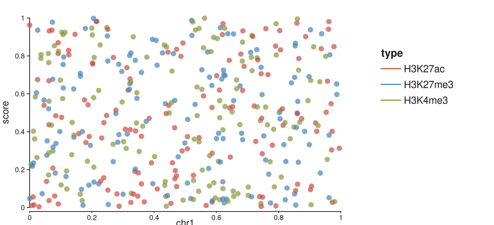
Three-level discrete color legend in the right track margin.
The legend title is taken from the column name. No
seq_legend() call is needed.
2. Shape auto-legend from map(shape = ...)
map(shape = ...) works the same way for discrete
columns. Levels are cycled through
circle → square → triangle → diamond, and a matching keyed
legend appears in the right margin:
p2 <- seq_plot(aesthetics = right_margin) %+%
seq_track(data = gr, mapping = map(x = start, y = score), windows = win) %+%
seq_point(
aesthetics = aes(size = 0.8, alpha = 0.7),
mapping = map(shape = type)
)
p2$plot()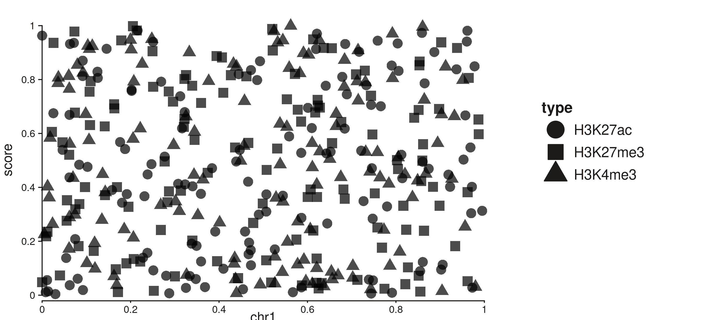
Shape legend auto-generated from map(shape = type) in the right track margin.
3. Continuous gradient auto-legend from
map(color = ...)
When the mapped column is numeric, SeqPlotR produces a
GradientLegendSpec and draws a color bar in the right
margin. The viridis palette is used by default. Tick positions are
placed automatically with pretty():
p3 <- seq_plot(aesthetics = right_margin) %+%
seq_track(data = gr, mapping = map(x = start, y = score), windows = win) %+%
seq_point(
aesthetics = aes(size = 0.7, alpha = 0.8),
mapping = map(color = score)
)
p3$plot()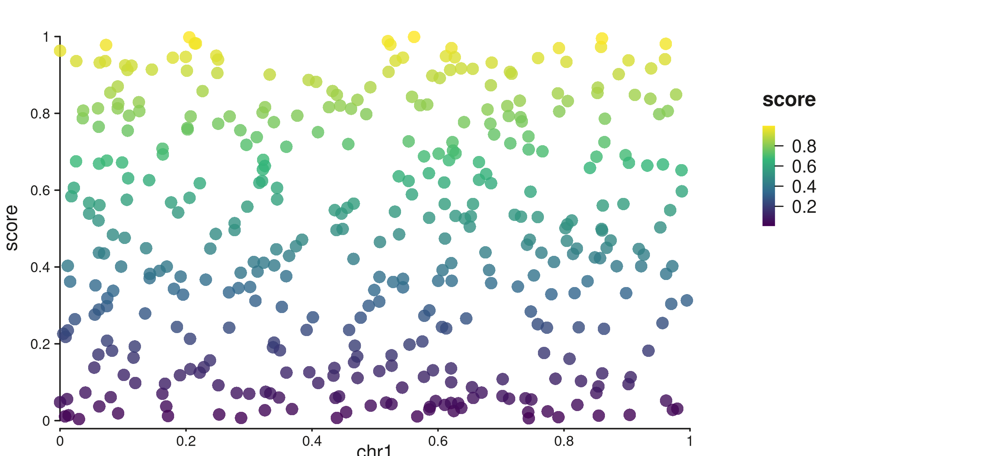
Viridis color bar with auto tick axis in the right track margin.
4. Bar chart with discrete fill legend (seq_bar)
seq_bar supports the same auto-legend machinery. Map
fill to a discrete column and each group gets a color key
in the right margin. The fill values are also automatically scaled to
valid colors so bars render correctly:
p4 <- seq_plot(aesthetics = right_margin) %+%
seq_track(data = gr, mapping = map(x = start, y = score), windows = win) %+%
seq_bar(
aesthetics = aes(alpha = 0.85),
mapping = map(x = start, y = score, fill = type)
)
p4$plot()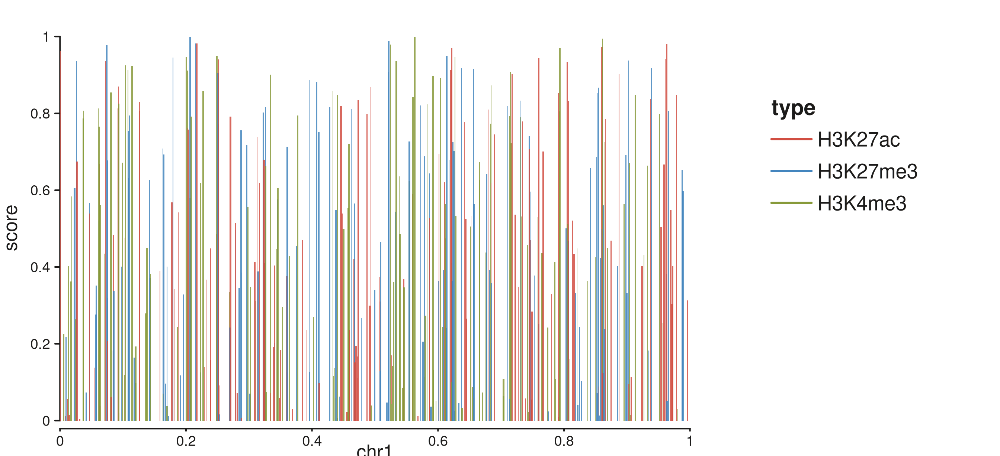
Bar chart with discrete fill auto-legend from map(fill = type).
Map fill to a numeric column and a color-bar legend is
produced instead:
p4b <- seq_plot(aesthetics = right_margin) %+%
seq_track(data = gr, mapping = map(x = start, y = score), windows = win) %+%
seq_bar(
aesthetics = aes(alpha = 0.85),
mapping = map(x = start, y = score, fill = score)
)
p4b$plot()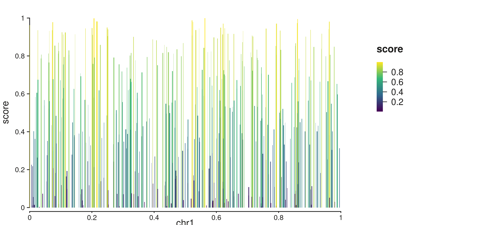
Bar chart with continuous fill gradient auto-legend.
5. Line with color legend (seq_line)
seq_line generates an auto-legend from
map(color = ...). For discrete columns a keyed legend is
placed in the right margin:
p5 <- seq_plot(aesthetics = right_margin) %+%
seq_track(data = gr, mapping = map(x = start, y = score), windows = win) %+%
seq_line(
mapping = map(x = start, y = score, color = type)
)
p5$plot()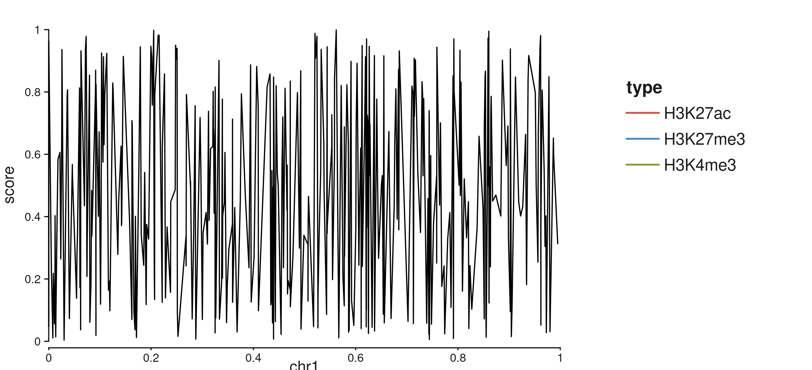
seq_line with discrete color auto-legend.
6. Area with fill legend (seq_area)
seq_area generates an auto-legend from
map(fill = ...). Map to a numeric column for a gradient
legend:
p6 <- seq_plot(aesthetics = right_margin) %+%
seq_track(data = gr, mapping = map(x = start, y = score), windows = win) %+%
seq_area(
mapping = map(x = start, y = score, fill = score)
)
p6$plot()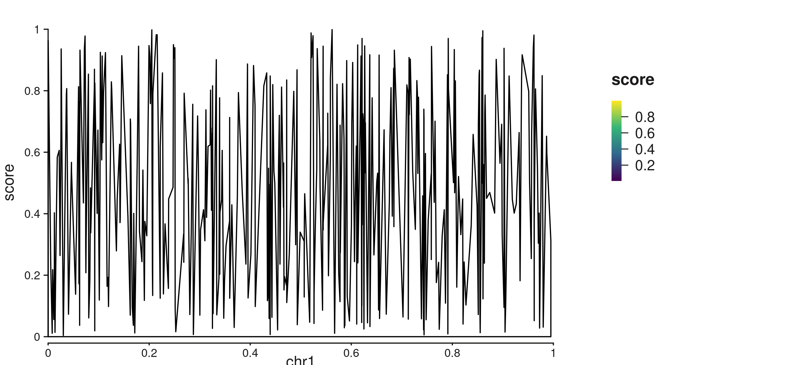
seq_area with continuous fill gradient auto-legend.
7. Heatmap with auto fill gradient (seq_tile)
seq_tile also supports auto-scaling. Map
fill to a numeric column and a gradient legend with a tick
axis is produced automatically:
p7 <- seq_plot(
aesthetics = aes(margins = list(top = 0.04, bottom = 0.04,
left = 0.04, right = 0.25))
) %+%
seq_track(windows = win) %+%
seq_tile(
data = gr_tiles,
mapping = map(x = start, y = y, fill = fill)
)
p7$plot()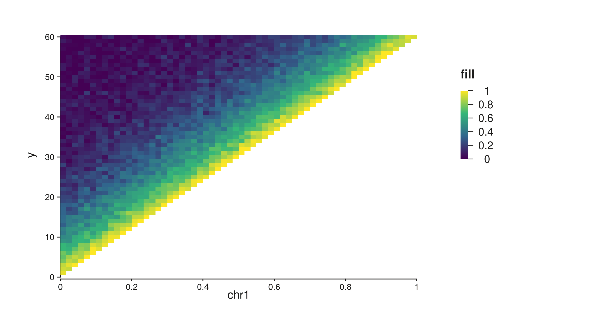
Contact-map tiles with auto gradient legend.
8. seq_gradient_legend() — explicit gradient specs
When you need more control — a different palette, specific limits,
custom tick positions, or a specific placement — use
seq_gradient_legend() directly and attach it to an element
via the legend field.
Continuous color bar with a custom palette
breaks = NULL (default) places ticks automatically via
pretty().
gleg <- seq_gradient_legend(
palette = "plasma",
limits = c(0, 1),
title = "Score",
x = 0.75, y = 0.95,
position = "inside"
)
p8 <- seq_plot() %+%
seq_track(data = gr, mapping = map(x = start, y = score), windows = win) %+%
seq_point(
mapping = map(color = score),
aesthetics = aes(size = 0.7, alpha = 0.8),
legend = gleg
)
p8$plot()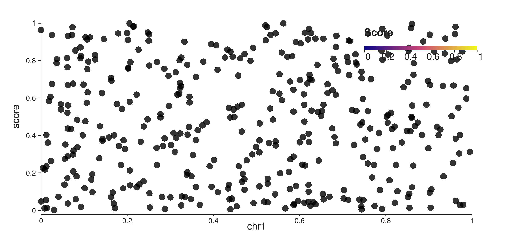
Plasma color bar placed inside the panel at a custom position.
Controlling tick positions
Set breaks to an integer n to place
n ticks from pretty(), or supply a numeric
vector for exact tick positions. All modes render a continuous color bar
with a tick+label axis:
gleg_breaks <- seq_gradient_legend(
palette = "viridis",
limits = c(0, 1),
title = "Score",
breaks = 5,
orientation = "vertical",
x = 0.02, y = 0.95,
position = "inside"
)
p9 <- seq_plot() %+%
seq_track(data = gr, mapping = map(x = start, y = score), windows = win) %+%
seq_point(
mapping = map(color = score),
aesthetics = aes(size = 0.7, alpha = 0.8),
legend = gleg_breaks
)
p9$plot()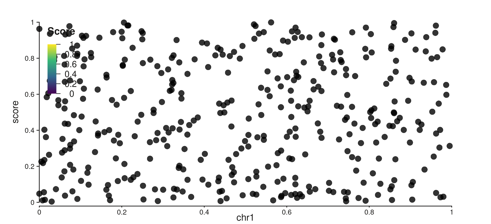
Color bar placed inside with 5 evenly-spaced ticks.
Explicit tick values:
gleg_vals <- seq_gradient_legend(
palette = "reds",
limits = c(0, 1),
title = "Score",
breaks = c(0.2, 0.5, 0.8),
x = 0.02, y = 0.95,
position = "inside"
)
p10 <- seq_plot() %+%
seq_track(data = gr, mapping = map(x = start, y = score), windows = win) %+%
seq_point(
mapping = map(color = score),
aesthetics = aes(size = 0.7, alpha = 0.8),
legend = gleg_vals
)
p10$plot()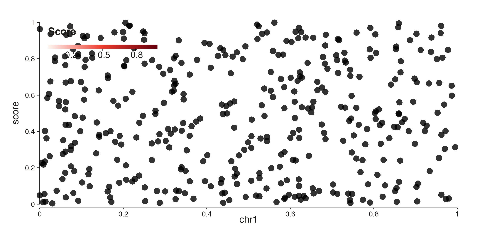
Reds color bar with ticks at 0.2, 0.5, and 0.8.
9. Heatmap with a labelled gradient legend
Attach seq_gradient_legend() with breaks to
a seq_tile element to get a labelled color bar on a
contact-map style heatmap:
hleg <- seq_gradient_legend(
palette = "reds",
limits = c(0, 1),
title = "Contact\nfrequency",
breaks = 4,
x = 0.72, y = 0.95,
orientation = "vertical",
position = "inside"
)
p11 <- seq_plot(
aesthetics = aes(margins = list(top = 0.04, bottom = 0.04,
left = 0.04, right = 0.04))
) %+%
seq_track(windows = win) %+%
seq_tile(
data = gr_tiles,
mapping = map(x = start, y = y, fill = fill),
legend = hleg
)
p11$plot()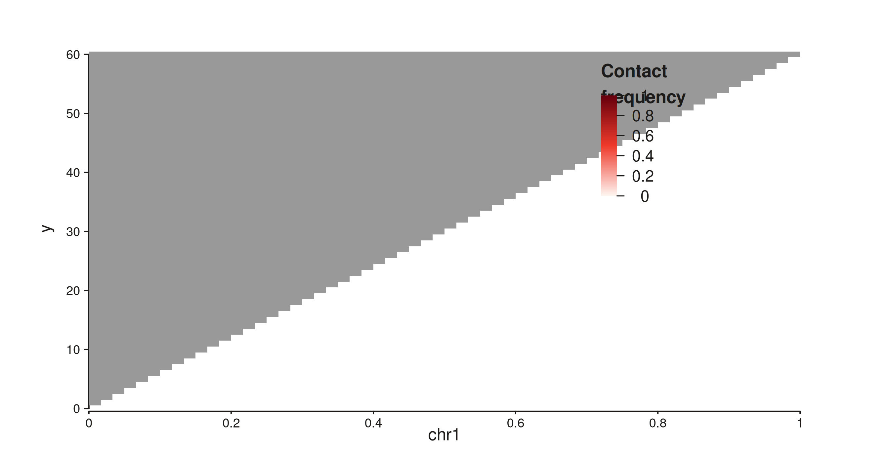
Contact-map heatmap with a four-tick gradient legend placed inside.
10. Suppression
Auto-legends respect the same suppression hierarchy as manual legends.
show_legend = FALSE on an element suppresses auto-legend
generation:
el_hidden <- seq_point(
data = gr,
mapping = map(x = start, y = score, color = type),
show_legend = FALSE
)
# auto_legend is NULL — nothing was generated
is.null(el_hidden$auto_legend)
#> [1] TRUEseq_plot(legend = FALSE) suppresses all legends
including auto-legends:
p_none <- seq_plot(legend = FALSE, aesthetics = right_margin) %+%
seq_track(data = gr, mapping = map(x = start, y = score), windows = win) %+%
seq_point(
mapping = map(color = type),
aesthetics = aes(size = 0.6, alpha = 0.7)
)
p_none$plot()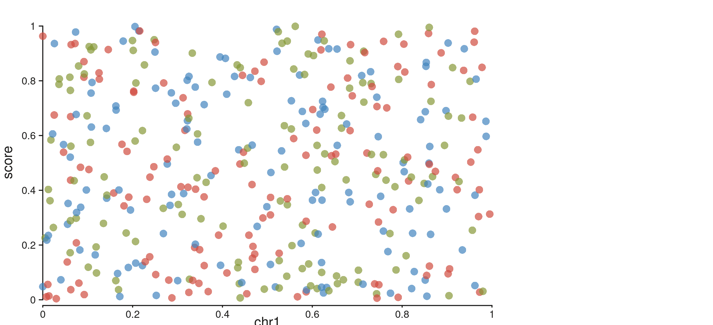
legend = FALSE suppresses the auto-generated discrete legend.
Summary
| Scenario | How |
|---|---|
| Discrete auto-legend (color or fill) |
map(color = char_col) — no extra call |
| Shape auto-legend |
map(shape = char_col) — no extra call |
| Continuous gradient auto-legend |
map(color = numeric_col) — no extra call |
| Auto-legend on bar / line / area | seq_bar/line/area(mapping = map(fill = col)) |
| Custom gradient palette / position | legend = seq_gradient_legend(palette=, limits=, ...) |
| Custom tick positions on colorbar |
seq_gradient_legend(breaks = n) or
breaks = c(v1, v2, ...)
|
| Suppress auto-legend for one element | seq_point(..., show_legend = FALSE) |
| Suppress all legends | seq_plot(legend = FALSE) |
Auto-legends default to position = "track_margin",
side = "right". Set right in the plot margins
(aes(margins = list(right = 0.25, ...))) to reserve space
for them.
| Palette name | Colors |
|---|---|
"viridis" |
purple → teal → yellow (default) |
"plasma" |
dark blue → magenta → yellow |
"magma" |
black → red → cream |
"blues" |
white → mid blue → navy |
"reds" |
white → red → dark red |